Setup the main view
Before checking reports, you should verify your patient has setup correctly data upload.
The steps below might not be necessary but will probably give you more insights on the patient system.
If you’re only looking for reports, skip this step and continue to reports.
Customize your view
Open the main menu, located at the top right of the window, select the drawer icon:
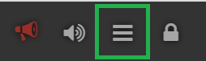{kind=link}
Select the units for blood glucose values.
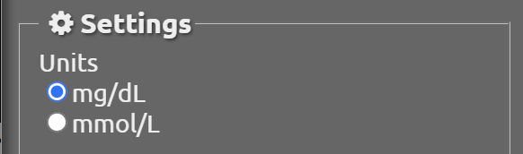{kind=link}
Select the language used for Nightscout display.
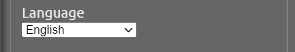{kind=link}
If the patient uses a pump that can send its basal rates, or has setup programmed basal rates, enable basal default display.
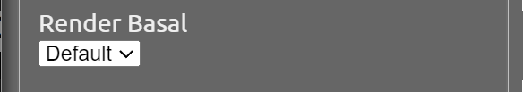{kind=link}
Enable all available plugins and save.
This will only modify the way you visualize Nightscout on the device you’re using. It will not interfere with the patient settings.
{kind=link}
Identify displayed items
A typical DIY closed loop user display will look like this.
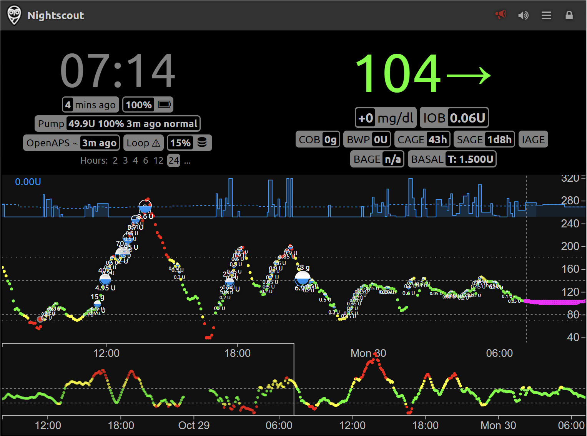{kind=link}
Last 48 hours are visible, you can select the upper graph time scale clicking on the corresponding length (2 to 24 hours). You can slide the lower graph selection to visualize the corresponding time period on the top graph.
The rounded rectangle indicators are called “pills” and contain immediately visible indications, or more insights if you hover on them with the mouse.
They can be automatically or manually updated by the patient or its closed loop/uploader device, else they will be empty or meaningless. As setting warning and urgent limit values for these pills is not always adjusted by the user in Nightscout variables, they might appear in yellow or red for values that are within normal usage.
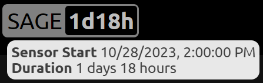{kind=link}
Current blood glucose is displayed top left, the arrow only indicates the difference between the current measurement and the previous one (you’ll see the measurement age on the left of the view).
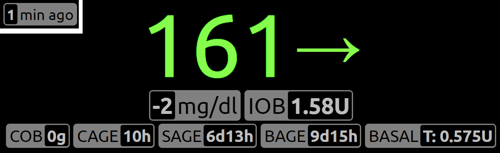{kind=link}
IOB: Insulin on board, is calculated using the insulin duration parameter in the current profile if no external closed loop system is used, or by this external algorithm if any (OpenAPS/Loop).
COB: Carbs on board are calculated by the absorption rate set in the profile.
CAGE, SAGE, BAGE, IAGE are timers counting the time since last Cannula (infusion site), Sensor, Battery and Insulin cartridge change.
BASAL displays the current basal rate.
Uploading device battery level and Nightscout storage used space are not of clinical interest.
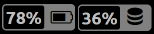{kind=link}
Connected pumps will show available insulin units, battery status and last registered activity.
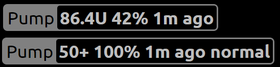{kind=link}
DIY closed loop systems can be identified with the Loop (Loop) or OpenAPS (OpenAPS, AndoidAPS, Trio, FreeAPS X, iAPS) pill. Only one will be enabled, if the other one appears it will normally show an exclamation mark. If a DIY closed loop system Nightscout doesn’t show any active pill, configuration needs to be fixed so that Nightscout receives all necessary data (patient responsibility).
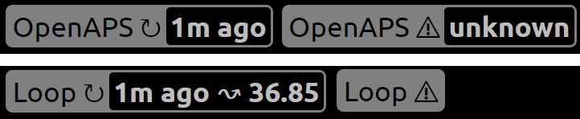{kind=link}
Basal display shows the programmed basal in dotted lines and the actual basal modulation. This is an example for the default basal display.
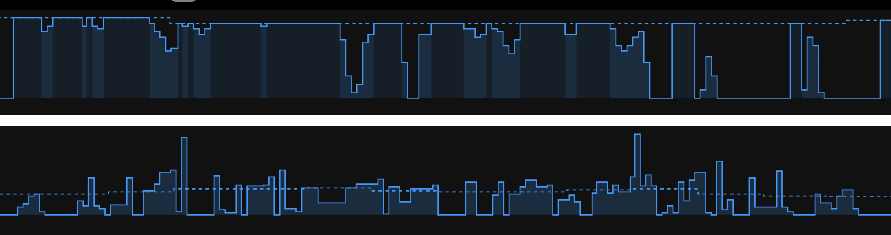{kind=link}
Loop adds rich details to Nightscout real time display, like food types and visual information.
Hovering on the DIY closed loop system pill (Loop/OpenAPS) will show insights of the algorithm decisions.
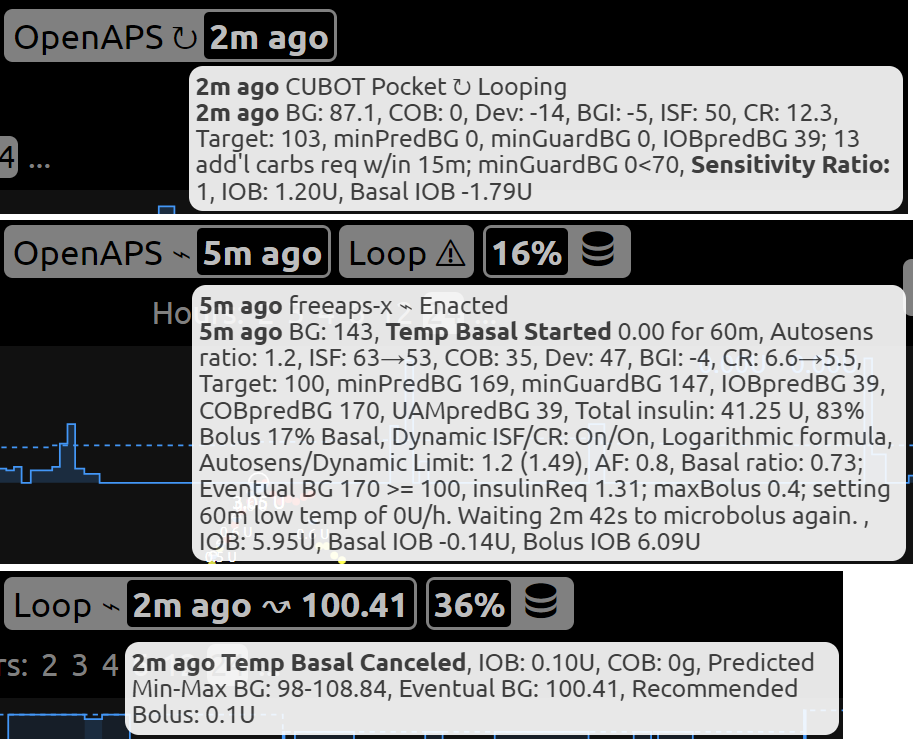{kind=link}
Next step:
Follow the link below.